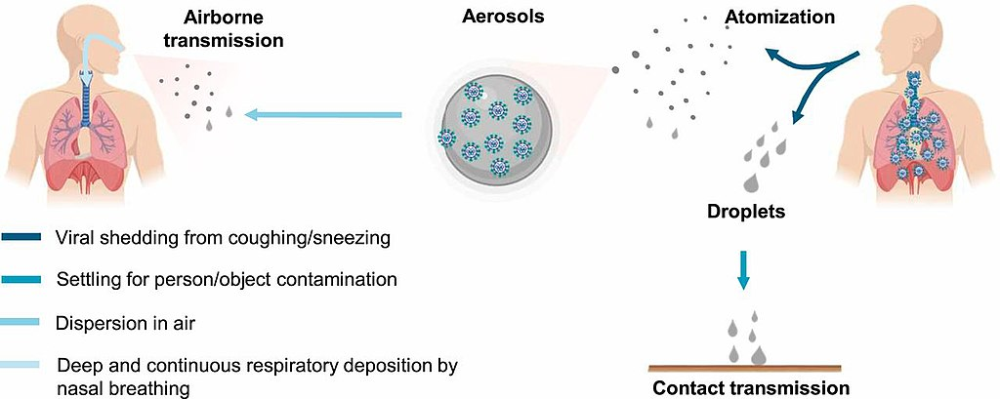
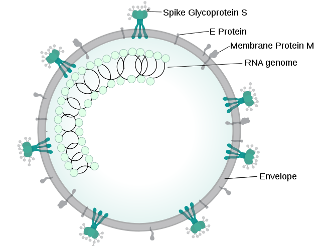

COVID - 19 (SARS-CoV-2)
#STAY SAFECoronavirus disease 2019 (COVID-19) is a contagious disease caused by severe acute respiratory syndrome coronavirus 2 (SARS-CoV-2). The first case was identified in Wuhan, China, in December 2019. The disease has since spread worldwide, leading to an ongoing pandemic. Symptoms of COVID-19 are variable, but often include fever, cough, fatigue, breathing difficulties, and loss of smell and taste. Symptoms may begin one to fourteen days after exposure to the virus. At least a third of people who are infected do not develop noticeable symptoms. Of those people who develop noticeable symptoms enough to be classed as patients, most (81%) develop mild to moderate symptoms (up to mild pneumonia), while 14% develop severe symptoms (dyspnea, hypoxia, or more than 50% lung involvement on imaging), and 5% suffer critical symptoms (respiratory failure, shock, or multiorgan dysfunction). Older people are more likely to have severe symptoms. Some people continue to experience a range of effects—known as long COVID—for months after recovery, and damage to organs has been observed. Multi-year studies are underway to further investigate the long-term effects of the disease.
Signs and symptoms
Symptoms of COVID-19 are variable, ranging from mild symptoms to severe illness. Common symptoms include headache, loss of smell and taste, nasal congestion and rhinorrhea, cough, muscle pain, sore throat, fever, diarrhea, and breathing difficulties. People with the same infection may have different symptoms, and their symptoms may change over time. Three common clusters of symptoms have been identified: one respiratory symptom cluster with cough, sputum, shortness of breath, and fever; a musculoskeletal symptom cluster with muscle and joint pain, headache, and fatigue; a cluster of digestive symptoms with abdominal pain, vomiting, and diarrhea. In people without prior ear, nose, and throat disorders, loss of taste combined with loss of smell is associated with COVID-19. Most people (81%) develop mild to moderate symptoms (up to mild pneumonia), while 14% develop severe symptoms (dyspnea, hypoxia, or more than 50% lung involvement on imaging) and 5% of patients suffer critical symptoms (respiratory failure, shock, or multiorgan dysfunction). At least a third of the people who are infected with the virus do not develop noticeable symptoms at any point in time. These asymptomatic carriers tend not to get tested and can spread the disease. Other infected people will develop symptoms later, called "pre-symptomatic", or have very mild symptoms and can also spread the virus. As is common with infections, there is a delay between the moment a person first becomes infected and the appearance of the first symptoms. The median delay for COVID-19 is four to five days. Most symptomatic people experience symptoms within two to seven days after exposure, and almost all will experience at least one symptom within 12 days.
Signs and symptoms
Severe acute respiratory syndrome coronavirus 2 (SARS-CoV-2) is a novel severe acute respiratory syndrome coronavirus. It was first isolated from three people with pneumonia connected to the cluster of acute respiratory illness cases in Wuhan. All structural features of the novel SARS-CoV-2 virus particle occur in related coronaviruses in nature. Outside the human body, the virus is destroyed by household soap, which bursts its protective bubble. SARS-CoV-2 is closely related to the original SARS-CoV. It is thought to have an animal (zoonotic) origin. Genetic analysis has revealed that the coronavirus genetically clusters with the genus Betacoronavirus, in subgenus Sarbecovirus (lineage B) together with two bat-derived strains. It is 96% identical at the whole genome level to other bat coronavirus samples (BatCov RaTG13). The structural proteins of SARS-CoV-2 include membrane glycoprotein (M), envelope protein (E), nucleocapsid protein (N), and the spike protein (S). The M protein of SARS-CoV-2 is about 98% similar to the M protein of bat SARS-CoV, maintains around 98% homology with pangolin SARS-CoV, and has 90% homology with the M protein of SARS-CoV; whereas, the similarity is only around 38% with the M protein of MERS-CoV. The structure of the M protein resembles the sugar transporter SemiSWEET. The many thousands of SARS-CoV-2 variants are grouped into clades. Several different clade nomenclatures have been proposed. Nextstrain divides the variants into five clades (19A, 19B, 20A, 20B, and 20C), while GISAID divides them into seven (L, O, V, S, G, GH, and GR). Several notable variants of SARS-CoV-2 emerged in late 2020. Cluster 5 emerged among minks and mink farmers in Denmark. After strict quarantines and a mink euthanasia campaign, it is believed to have been eradicated. The Variant of Concern 202012/01 (VOC 202012/01) is believed to have emerged in the United Kingdom in September. The 501Y.V2 Variant, which has the same N501Y mutation, arose independently in South Afric